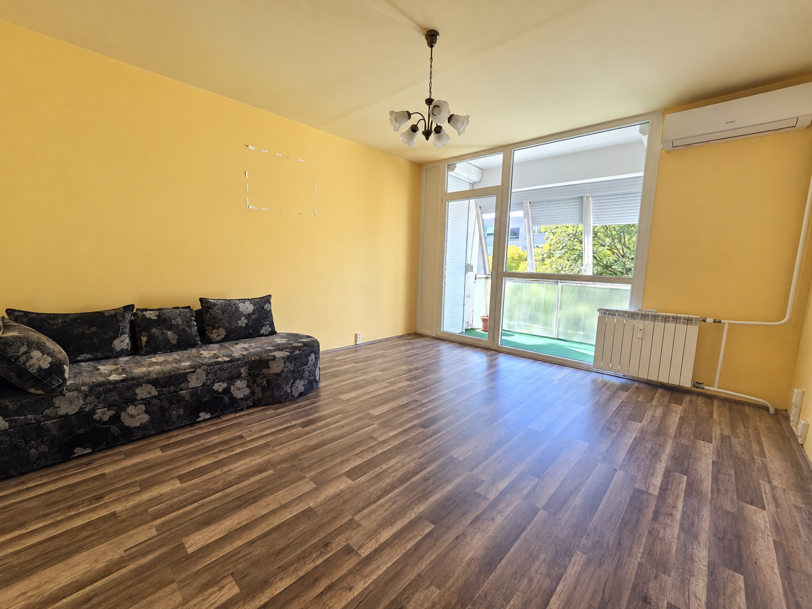
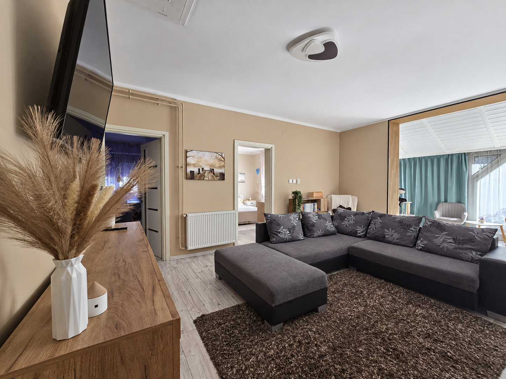

Egy lakás, több nézőpont.
A kertvárosi otthon részletei, metszeti áttekintések és közeli nézetek.
Nagy Imre út — filmFOTÓK. TEREK. NÉZŐPONTOK.
Van, amit egy kép mutat meg. És van, amit csak akkor veszel észre, ha kicsit tovább nézel.


Valódi terek fotói,
digitálisan rendezve.
VÁLOGASS A BEMUTATÓK KÖZÜL
Belvárosi lakás, kertkapcsolat vagy vidéki ház. Ismerd meg a tereket a saját képeiken keresztül.
12 / 12 bemutató
Pécs · Egyetemváros
47 m²-es, másfél szobás lakás a harmadik emeleten. Digitálisan rendezett fotók, fotófilm, szemléltető 3D és 3D-körbejárás.
49,9 M FtHIRDETETT IRÁNYÁR
MegnézemPécs · Uránváros · Veress Endre utca
50 m², két külön nyíló szoba, földszinti elhelyezkedés. A Veress Endre utcai lakás digitálisan rendezett forrásképei és saját szemléltető térmodellje.
48,9 M FtHIRDETETT IRÁNYÁR
MegnézemPécs · Egyetemváros
47 m², második emelet, amerikai konyhás nappali és két külön háló a poszt szerint. A bemutató a felújítás folyamatából származó forrásképeket őrzi.
53,9 M FtHIRDETETT IRÁNYÁR
MegnézemPécs · Patacs
A poszt szerint 64 m²-es első emeleti lakás, 10 m²-es délnyugati terasszal és két felszíni gépkocsibeállóval. A képi források külső építészeti tervlátványok és egy alaprajz.
74,5 M FtHIRDETETT IRÁNYÁR
MegnézemPécs · Jászai Mari utca
61 m², két szoba, első emelet. Külön konyha és kamra, étkezőként használt hall, nappali és háló: egyetlen, igazoltan azonos lakás két forrásposztjából.
62,9 M FtHIRDETETT IRÁNYÁR
MegnézemPécs · Színház tér
132 m²-es polgári lakás Pécs történelmi belvárosában, két erkéllyel, külön vendég-WC-vel és szülői gardróbbal.
149,9 M FtHIRDETETT IRÁNYÁR
MegnézemPécs · 105 m²-es otthon
105 m², három hálószoba, amerikai konyhás nappali. Saját kertet, dupla teraszt és parkolási lehetőségeket kínáló otthon a forrásposzt szerint.
100 M FtHIRDETETT IRÁNYÁR
MegnézemPÉCS · RÓZSADOMB
105 m²-es, kétszintes sorházi otthon: nappali, négy hálószoba, két eltérő fürdő és két saját kertrész a hirdetés szerint.
99 M FtHIRDETETT IRÁNYÁR
MegnézemSomogyviszló · családi ház
100 m²-es családi ház, három hálószobával, nappalival és nagy udvarral. Fedett nyári konyha, műhely és garázs a hirdetés szerint.
39,9 M FtHIRDETETT IRÁNYÁR
MegnézemPécs · Kertváros · Nagy Imre út
62 m²-es, 2,5 szobás lakás a második emeleten, beüvegezett erkéllyel. MI-vel retusált fotók, eredeti források és kapcsolható falú szemléltető térmodell, választható berendezési ötletekkel.
49,9 M FtHIRDETETT IRÁNYÁR
MegnézemPécs · Donátus · tervezett ikerházi otthon
Tervlátványok és három szint alaprajza egy tervezett otthonról. A hirdetett 134 m² a garázst is tartalmazza; várható átadás 2027 végén.
129,9 M FtHIRDETETT IRÁNYÁR
MegnézemTervezett lakás · helyszíne nem ismert
A terven közös nappali és konyha-étkező, valamint két külön szoba szerepel. MI-látványok, szemléltető térmodell és berendezési ötletek.
Ár nem igazoltA 108-AS TERVRE
MegnézemPróbálj másik helyszínt vagy rövidebb keresést.
A méretek és árak a hirdetések adatai; az aktuális elérhetőséget nem igazolják. A fotók digitálisan rendezett változatok lehetnek. A tervlátványokat külön jelöljük, a részletes forrás- és szerkesztési információ minden bemutatóban megtalálható.
NÉHÁNY PERC, MÁS PERSPEKTÍVA
Három különböző megközelítés: saját térmodell, fotókból szerkesztett történet és jelölt AI-illusztráció.
A kertvárosi otthon részletei, metszeti áttekintések és közeli nézetek.
Nagy Imre út — filmFa, textil és fény: a konyha és a nappali saját forrásfotóiból készült rövidfilm.
Somogyviszló — fotófilmGenerált mozgás, a forrástól eltérő részletekkel. Az eltérések a bemutatóban külön szerepelnek.
Somogyviszló — AI-filmA NÉZŐPONTOT TE VÁLASZTOD
Forgatható térmodellek, választható nézetek. A Nagy Imre úti bemutatóban a falak elrejtésével és berendezési ötletekkel is kipróbálhatod a teret.
A modellek fotók és tájékoztató alaprajz alapján készült szemléltetések, nem hiteles felmérések.